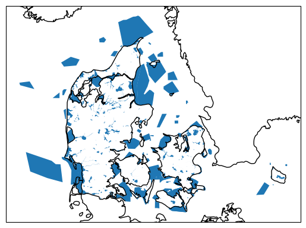
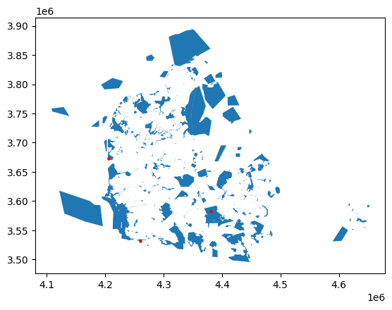

Solution geopandas & cartopy
Take the following code snippet as a starting point. It loads the NUTS regions of Europe, the power plant dataset, and a shapefile for the Danish Natura2000 natural protection areas.
import cartopy
import pandas as pd
import geopandas as gpd
import cartopy.crs as ccrs
import matplotlib.pyplot as plt
url = "https://tubcloud.tu-berlin.de/s/RHZJrN8Dnfn26nr/download/NUTS_RG_10M_2021_4326.geojson"
nuts = gpd.read_file(url)
fn = "https://raw.githubusercontent.com/PyPSA/powerplantmatching/master/powerplants.csv"
df = pd.read_csv(fn, index_col=0)
geometry = gpd.points_from_xy(df["lon"], df["lat"])
ppl = gpd.GeoDataFrame(df, geometry=geometry, crs=4326)
url = "https://tubcloud.tu-berlin.de/s/mEpdmgBtmMbyjAr/download/Natura2000_end2021-DK.gpkg"
natura = gpd.read_file(url)
Show code cell content
Hide code cell content
Task 1: Identify the coordinate reference system of the natura GeoDataFrame.
Show code cell content
Hide code cell content
<Projected CRS: EPSG:3035>
Name: ETRS89-extended / LAEA Europe
Axis Info [cartesian]:
- Y[north]: Northing (metre)
- X[east]: Easting (metre)
Area of Use:
- name: Europe - European Union (EU) countries and candidates. Europe - onshore and offshore: Albania; Andorra; Austria; Belgium; Bosnia and Herzegovina; Bulgaria; Croatia; Cyprus; Czechia; Denmark; Estonia; Faroe Islands; Finland; France; Germany; Gibraltar; Greece; Hungary; Iceland; Ireland; Italy; Kosovo; Latvia; Liechtenstein; Lithuania; Luxembourg; Malta; Monaco; Montenegro; Netherlands; North Macedonia; Norway including Svalbard and Jan Mayen; Poland; Portugal including Madeira and Azores; Romania; San Marino; Serbia; Slovakia; Slovenia; Spain including Canary Islands; Sweden; Switzerland; Türkiye (Turkey); United Kingdom (UK) including Channel Islands and Isle of Man; Vatican City State.
- bounds: (-35.58, 24.6, 44.83, 84.73)
Coordinate Operation:
- name: Europe Equal Area 2001
- method: Lambert Azimuthal Equal Area
Datum: European Terrestrial Reference System 1989 ensemble
- Ellipsoid: GRS 1980
- Prime Meridian: Greenwich
Task 2: Plot the natura GeoDataFrame on a map without transforming its CRS. Use cartopy for setting the projection of the figure and add coastlines and borders.
Show code cell content
Hide code cell content

Task 3: Identify the name of the largest protected area in the natura GeoDataFrame.
Show code cell content
Hide code cell content
'Skagens Gren og Skagerak'
Task 4: What is the total protection area in square kilometers.
Show code cell content
Hide code cell content
np.float64(22646.37570082661)
Task 5: The natura GeoDataFrame has a column SITETYPE that indicates the type of protected area. Calculate the total area for each type of protected area (again in square kilometers).
Show code cell content
Hide code cell content
SITETYPE
A 11751.536465
B 16632.563873
C 3037.541735
dtype: float64
Task 6: By how much (in percent) would the total area of protected areas increase if a buffer of 1 km around each protected area were also protected?
Show code cell content
Hide code cell content
Show code cell content
Hide code cell content
Show code cell content
Hide code cell content
np.float64(46.434737333502085)
Task 7: List the power plants that are located within protected areas. How many power plants are located within protected areas? Use the .sjoin() function. Check the result by plotting these power plants on top of the protected areas.
Show code cell content
Hide code cell content
|
Name |
Fueltype |
Technology |
Set |
Country |
Capacity |
Efficiency |
DateIn |
DateRetrofit |
DateOut |
... |
StorageCapacity_MWh |
EIC |
projectID |
geometry |
index_right |
SITECODE |
SITENAME |
MS |
SITETYPE |
INSPIRE_ID |
| id |
|
|
|
|
|
|
|
|
|
|
|
|
|
|
|
|
|
|
|
|
|
| 3670 |
Sprogo Offshore Wind Farm |
Wind |
Offshore |
PP |
Denmark |
21.0 |
NaN |
2009.0 |
NaN |
NaN |
... |
0.0 |
{nan} |
{'GEM': {'G100000914988'}, 'GPD': {'WRI1030002'}} |
POINT (4380645.027 3582173.5) |
201 |
DK008X190 |
Vresen |
DK |
B |
Dk.nst.ps.SAC100 |
| 18670 |
Rens Hedegard Plantage Wind Farm |
Wind |
Onshore |
PP |
Denmark |
15.0 |
NaN |
2010.0 |
NaN |
NaN |
... |
0.0 |
{nan} |
{'GEM': {'G100000913204'}} |
POINT (4259799.359 3531446.118) |
90 |
DK009X063 |
Sønder Ådal |
DK |
A |
Dk.nst.ps.SPA63 |
| 18739 |
Ringkobing Skjern Solar |
Solar |
PV |
PP |
Denmark |
1.0 |
NaN |
2013.0 |
NaN |
NaN |
... |
0.0 |
{nan} |
{'GEM': {'G100001008126'}} |
POINT (4206196.591 3673153.835) |
109 |
DK00CX161 |
Stadil Fjord og Vest Stadil Fjord |
DK |
C |
Dk.nst.ps.SAC59 |
3 rows × 25 columns
Show code cell content
Hide code cell content
Show code cell content
Hide code cell content

Task 8 (advanced): What fraction of the natural protection area is located offshore? Use set operations with the .overlay() function and the NUTS regions GeoDataFrame.
Show code cell content
Hide code cell content
Show code cell content
Hide code cell content
Show code cell content
Hide code cell content
Show code cell content
Hide code cell content
np.float64(18.630060811760643)